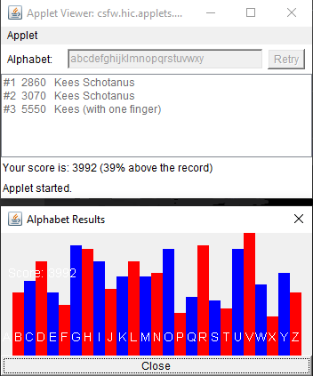

 Alphabet is a simple game where all you have to do, is type the alphabet as fast as you can.
I write a new version of Alphabet whenever I learn a new programming language.
Previously I have written versions in different BASIC dialects, C, Java
and some more obscure languages.
The images you see are from the Java version I wrote that uses an
Applet.
It is AWT based and uses an awt.Canvas to draw a histogram.
The source was written in the previous millennium and does not work
anymore since Applets have been deprecated.
Do note the record and the record using only one finger.
Can you beat these scores?
Actually using a new language makes me really learn it. It also forces me to use the tools that come with a new language, like editors and compilers for example. It also requires me to learn about:
The Alphabet version you are looking at right now, is written using Angular and TypeScript. It uses a third party library (CanvasJS) to show the score.
Start game